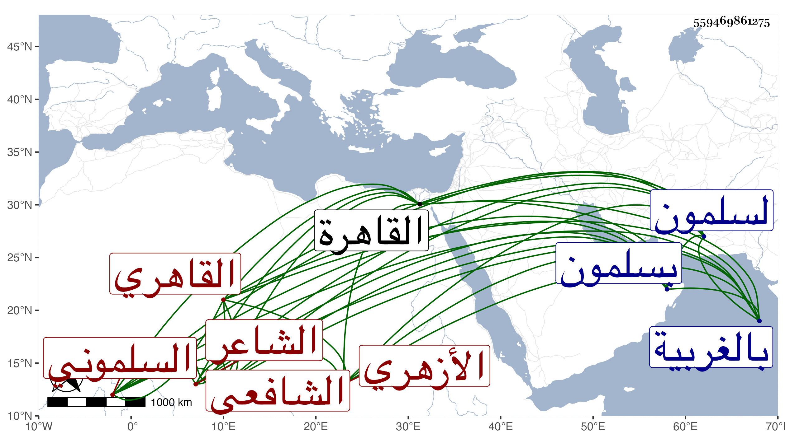

0902Sakhawi.DawLamic.ITO20230111-ara1.EIS1600.559469861275
Biography ID: 559469861275
426
عبيد بن عبد الله بن محمد بن يونس بن حامد السلموني نسبة لسلمون الغبار بالغربية ثم القاهري الأزهري الشافعي الشاعر . ولد في رجب سنة أربع وخمسين وثمانمائة بسلمون وقدم القاهرة فقرأ القرآن واشتغل قليلا ولازم محمدا الطنتدائي الضرير ثم عبد الحق السنباطي وغيرهما كالجوجري وتردد للقرافة قليلا وفهم وحفظ من كلمات الصوفية وأحوال اهلهم الكثير حتى كان يقول لو كان ... ثم اقبل على الشعر وأكثر من مطالعة دواوينه ونحوها ولا زال يتدرب بالشهاب المنزلي صاحبنا حتى صقل نظمه بحيث عمل في التقي بن قاضي عجلون ثم البدر بن ناظر الجيش ثم الزيني بن مزهر وهي أبدعها في ختم الحديث عنده ثم القطب الخيضري في آخرين وأهانه البدر في سنة إحدى وتسعين ثم استرضاه بعد الإنكار من العقلاء عليه وأثابه كل منهم والزيني قدرا زائدا بالنسبة لهذا الوقت وسمعته ينشد وهو بمنزلي من نظمه :
| وملزمي بالعروض اتقنه | وذاك مالا أراه لي أربا |
| فقلت دعني مما تكلفني | فالطبع لا شك يغلب الأدبا |
وقوله :
| بدت بشعرية قد اتحسرت | عن بعض ذاك الجبين للعاني |
| فكان أدنى الذي أشبه ما | به بدت بالهلال في الثاني |
وقوله : وقد ولد لمحمد بن الشهابي حفيد العيني من ابنة لاجين ابن سماه محمودا
| حمدا لدهر جاءنا بمملك | للمجد من آبائه تشييد |
| ويدوم حيث بدا به النجل الذي | زان الزمان وأصله محمود |
وقوله :
| قيل لي بعد امتداحك من | تلقه في سائر السكك |
| أم عبد البر ممتدحا | أنه في هيئة الملك |
| قلت هذا ليس من خلقي | أن أبيع الشعر بالشكك |
وله في المدح والهجو شيء كثير مع ذكره بالفحولة والهمة وعدم الجبن .
